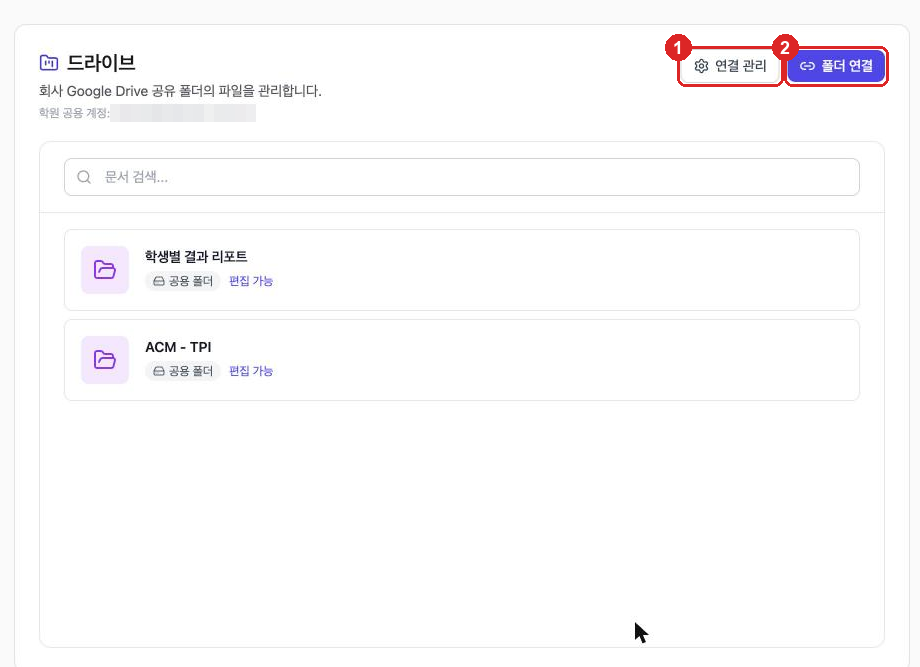
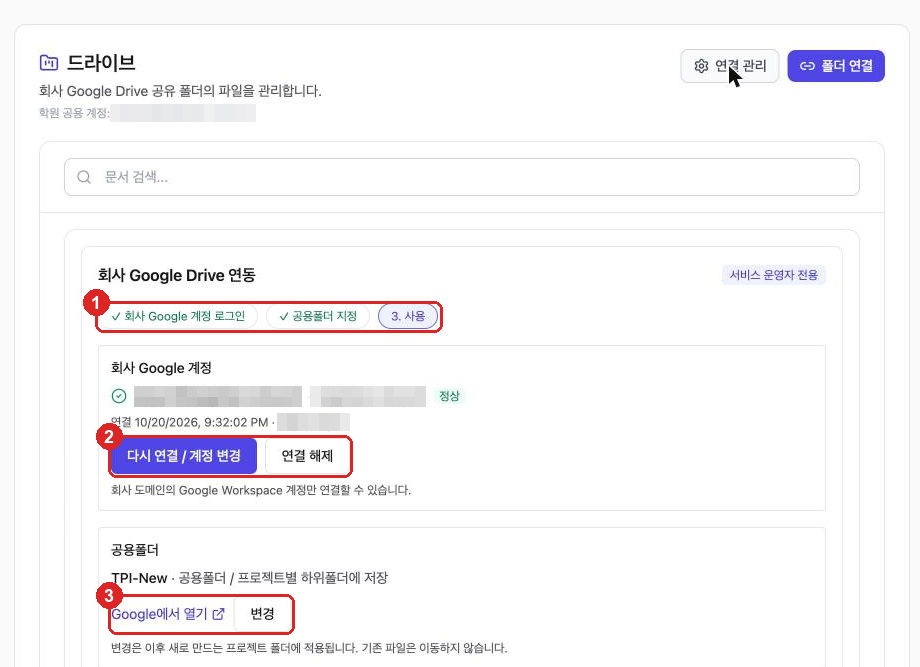
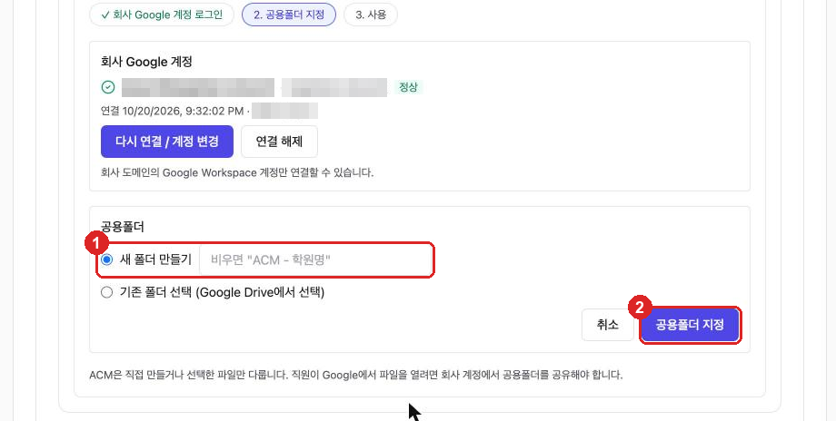
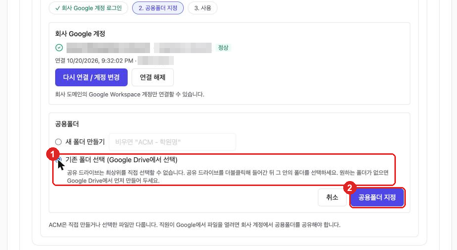
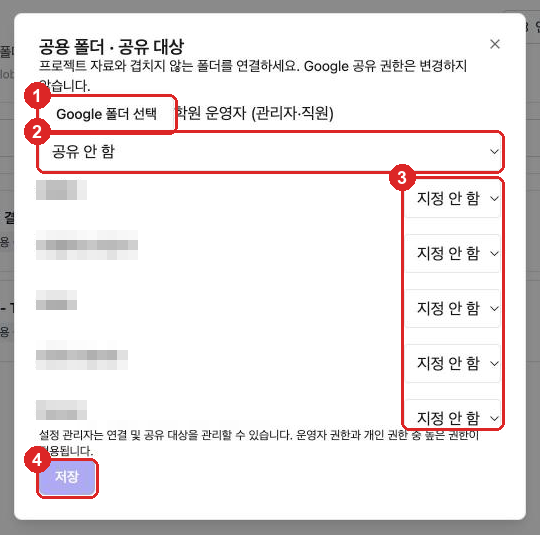
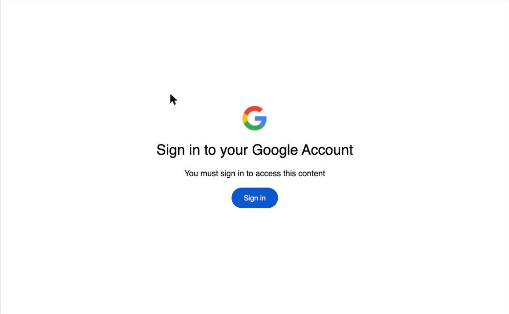
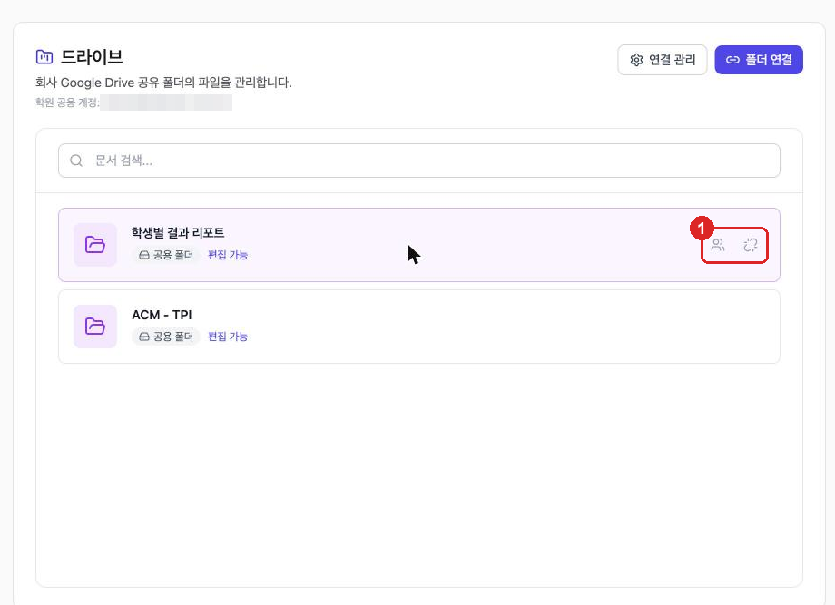
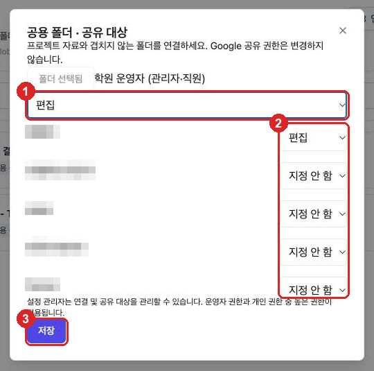
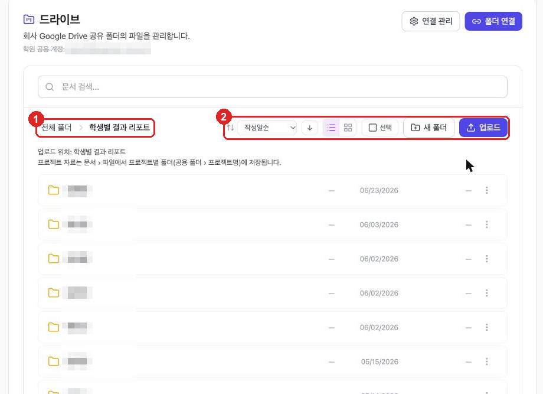

0 한눈에 보기
드라이브 주소는 https://acm.amoeba.site/admin/drive 입니다. 연결 관리는 학원의 회사 Google 계정을 한 번 연결하는 설정이고, 폴더 연결은 그 계정의 Google Drive 폴더를 드라이브 화면에 등록해 직원과 함께 쓰는 기능입니다.
| 작업 | 할 수 있는 사람 |
|---|---|
| 계정 연결·해제, 공용폴더 지정, 폴더 연결, 공유 대상 변경, 연결 해제 | 서비스 운영자 설정 권한이 있는 관리자 |
| 연결된 폴더 탐색·검색·다운로드 | 공유 대상으로 열람 이상 지정된 사용자 |
| 업로드·새 폴더·이름 변경·이동·휴지통 | 공유 대상으로 편집 지정된 사용자 |
1 드라이브 화면 구성
좌측 메뉴 드라이브를 누르면 연결된 폴더 목록이 나옵니다. 제목 아래에 학원 공용 계정(연결된 회사 Google 계정)이 표시되고, 오른쪽 위에 버튼 2개가 있습니다.

| 구역 | 설명 |
|---|---|
| ① 연결 관리 | 회사 Google 계정 연결 상태와 공용폴더 설정 패널을 펼치거나 접습니다. |
| ② 폴더 연결 | Google Drive 폴더를 새로 등록합니다. 계정이 연결되어 있어야 누를 수 있으며, 서비스 운영자에게만 보입니다. |
| 문서 검색 | 연결된 모든 폴더에서 파일 이름을 검색합니다(2글자 이상). |
| 폴더 카드 | 폴더 이름, 공용 폴더 표시, 내 권한(편집 가능 / 읽기 전용)이 표시됩니다. 누르면 폴더 안으로 들어갑니다. |
2 연결 관리 서비스 운영자 전용
[연결 관리]를 누르면 회사 Google Drive 연동 패널이 열립니다. 상단의 단계 표시(① 회사 Google 계정 로그인 → 공용폴더 지정 → 사용)로 현재 진행 상태를 확인할 수 있습니다. 완료된 단계는 ✓로 표시됩니다.

회사 Google 계정 연결 (1단계)
- [연결 관리] → 회사 Google 계정 영역에서 [회사 Google 계정으로 로그인] 클릭 (이미 연결된 경우 버튼 이름은 [다시 연결 / 계정 변경])
- Google 로그인 화면에서 학원 회사 계정(Google Workspace)을 선택
- 권한 동의 화면에서 Google Drive 항목을 반드시 체크한 뒤 [계속]
- 드라이브 화면으로 돌아오면 계정 이메일 옆에 정상이 표시되고, 연결 일시·연결자가 기록됩니다
| 계정 상태 표시 | 의미 · 조치 |
|---|---|
| 정상 | 바로 사용할 수 있습니다. |
| 재연결 필요 | Google 인증이 만료되었거나 Drive 권한이 부족합니다. [다시 연결 / 계정 변경]으로 다시 로그인하세요. 다시 연결하기 전까지 업로드는 ACM 저장소에 저장됩니다. |
공용폴더 지정 (2단계)
공용폴더는 프로젝트 자료가 저장되는 최상위 폴더입니다. 프로젝트를 만들면 공용폴더 / 프로젝트명 하위폴더가 자동으로 생깁니다. 계정을 처음 연결하면 지정 양식이 바로 열리고, 이미 지정되어 있으면 ③ [변경]을 눌러 엽니다.
방법 A — 새 폴더 만들기
- ① 새 폴더 만들기를 선택하고 폴더 이름 입력 (비워 두면
ACM - 학원명) - ② [공용폴더 지정] 클릭 → 회사 계정의 Google Drive에 폴더가 만들어집니다

방법 B — 기존 폴더 선택
- ① 기존 폴더 선택 (Google Drive에서 선택)을 선택
- ② [공용폴더 지정] 클릭 → Google 폴더 선택 창에서 폴더를 고르고 [선택]

3 폴더 연결 서비스 운영자 전용
[폴더 연결]은 회사 Google Drive의 폴더(예: 학생별 결과 리포트)를 드라이브 화면에 등록하고, 누가 열람·편집할 수 있는지를 정하는 기능입니다. Google Drive 자체의 공유 권한은 바꾸지 않습니다.
- 드라이브 오른쪽 위 [폴더 연결] 클릭 → 공용 폴더 · 공유 대상 창이 열립니다
- ① [Google 폴더 선택] → Google 폴더 선택 창에서 연결할 폴더를 고르고 [선택] → 버튼이 폴더 선택됨으로 바뀝니다
- ② 학원 운영자 (관리자·직원) 전체에게 줄 권한 선택 — 공유 안 함 / 열람 / 편집
- ③ 사용자 목록에서 개인별 권한 선택 — 지정 안 함 / 열람 / 편집 (운영자 전체 권한보다 높게 줄 사람만 지정하면 됩니다)
- ④ [저장] 클릭 → 폴더 카드가 목록에 추가됩니다 (폴더를 고르기 전에는 [저장]이 비활성)


권한(열람/편집) 규칙
| 권한 | 할 수 있는 것 |
|---|---|
| 공유 안 함 / 지정 안 함 | 폴더가 목록에 보이지 않습니다. |
| 열람 | 폴더 탐색·검색·미리보기·다운로드 (카드에 읽기 전용) |
| 편집 | 열람 + 업로드(50MB 이하)·새 폴더·이름 변경·이동·휴지통 (카드에 편집 가능) |
4 공유 대상 변경·연결 해제
폴더 카드에 마우스를 올리면 오른쪽에 아이콘 2개가 나타납니다 — 👥 공유 대상, ⛓ 폴더 연결 해제.

공유 대상 변경
- 👥 공유 대상 아이콘 클릭 → 현재 설정이 채워진 창이 열립니다 (폴더는 폴더 선택됨으로 고정, 바꿀 수 없음)
- ① 학원 운영자 권한, ② 개인별 권한을 수정
- ③ [저장] — 저장한 내용으로 공유 대상 전체가 바뀝니다

폴더 연결 해제
- ⛓ 폴더 연결 해제 아이콘 클릭
- 확인 창 "ACM에서 연결을 해제할까요? Google 원본은 보존됩니다." → [확인]
5 연결한 폴더 사용
폴더 카드를 누르면 폴더 안으로 들어갑니다. 하위 폴더를 눌러 계속 들어갈 수 있고, ① 경로(전체 폴더 › 폴더명)를 눌러 위로 돌아갑니다.

| 도구 | 설명 |
|---|---|
| 정렬 | 작성일순 · 파일크기순 · 종류별 · 작성자별, 오름/내림차순 |
| 보기 | 리스트 보기 / 카드 보기 |
| 선택 | 여러 항목을 골라 한꺼번에 이동·휴지통 이동 편집 |
| 새 폴더 · 업로드 | 현재 폴더에 만들거나 올립니다(파일당 50MB 이하) 편집 |
| ⋮ 더 보기 | 이름 변경 · 이동 · 휴지통으로 이동 편집 |
| 파일 클릭 | 상세(유형·크기·수정일·소유자) · 미리보기 · 다운로드 · Google Drive에서 열기 |
6 자주 묻는 문제
| 증상 | 확인·해결 |
|---|---|
| [폴더 연결] 버튼이 없음 | 서비스 운영자(설정 권한)에게만 보입니다. 운영자에게 요청하세요. |
| [폴더 연결] 버튼이 흐리게 눌리지 않음 | 회사 Google 계정이 연결되지 않았습니다 — 2장 [연결 관리]부터 진행 |
| "회사 Google Workspace 계정만 연결할 수 있습니다" | 개인 Gmail 계정으로 로그인했습니다 — 회사 도메인 계정으로 다시 연결 |
| "Google Drive 접근 권한이 허용되지 않았습니다" | 동의 화면에서 Drive 항목 체크를 빠뜨렸습니다 — [다시 연결] 후 Drive 항목 체크 |
| "운영 Google OAuth 앱 설정이 필요합니다" | 시스템 설정의 Google OAuth 앱 등록이 필요합니다 — 시스템 관리자에게 문의 |
| Google 폴더 선택 창에 Sign in만 보임 | 브라우저가 Google에 로그인되어 있지 않습니다 — [Sign in]으로 회사 계정 로그인 후 재시도 |
| "프로젝트 폴더와 겹치지 않는 공용 폴더를 선택하세요" | 프로젝트 폴더를 포함하거나 그 안에 있는 폴더입니다 — 다른 폴더 선택 |
| 직원에게 폴더가 안 보임 | 공유 대상에서 학원 운영자 또는 해당 직원 권한이 공유 안 함/지정 안 함인지 확인 → 열람 이상으로 변경 |
| 업로드 버튼이 없음 / 카드에 "읽기 전용" | 열람 권한만 있습니다 — 운영자에게 편집 권한 요청 |
| 계정 옆에 "재연결 필요" | [다시 연결 / 계정 변경]으로 같은 회사 계정에 다시 로그인 |